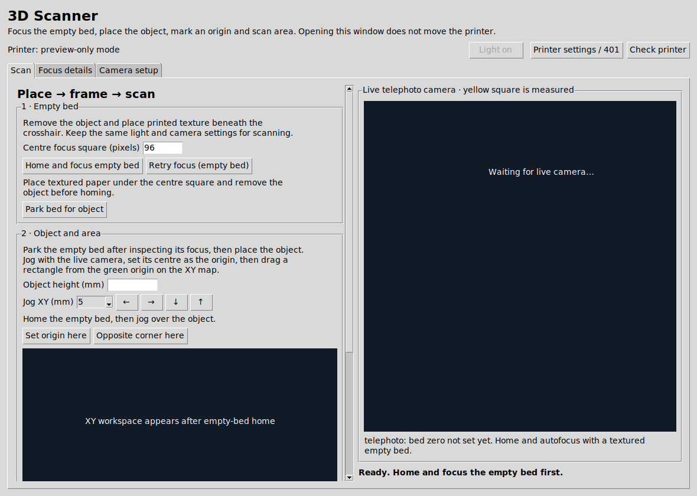

Controlled positioning
Klipper and Moonraker provide the motion interface, with live machine-limit and homing checks before guarded XY and Z movements.
Repurposing a FlashForge printer into a camera-based height scanner, using precise motion control, autofocus measurements and custom Python software.

The project reuses the movement system of a FlashForge printer for controlled camera positioning. Rather than relying on a single photograph, it searches for a sharp focus peak at individual XY locations and uses the measured machine Z position to construct a height map.
Its desktop interface brings together camera setup, an empty-bed focus reference, guarded positioning, rectangular scan framing, progress monitoring and a 3D height-map viewer. The system is designed to leave uncertain measurements as gaps instead of inventing surface heights.
Klipper and Moonraker provide the motion interface, with live machine-limit and homing checks before guarded XY and Z movements.
A telephoto camera records focus scores during coarse and fine Z searches. A verified empty-bed focus serves as the reference height.
Python combines focus measurements into an XY height map. Grid and stepped-outline scan modes are supported, with incomplete data left explicit.
This image comes from the scanner's actual Python/Tkinter source using a temporary virtual desktop and its preview-only mode. It is not a screenshot of an active scan and does not demonstrate camera image quality or completed measurement results. The underlying project repository and raw configuration remain private.